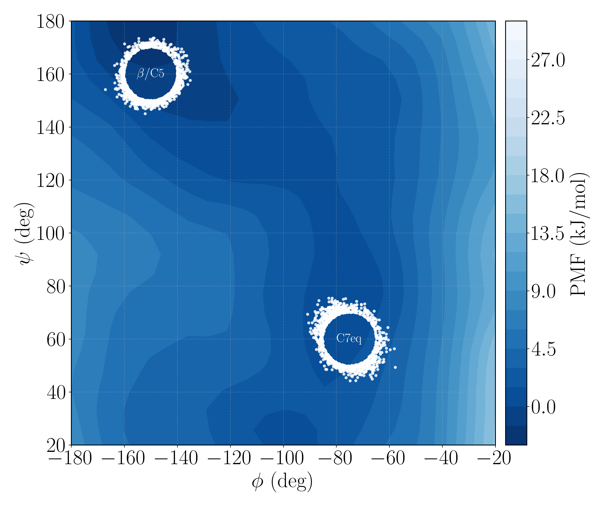
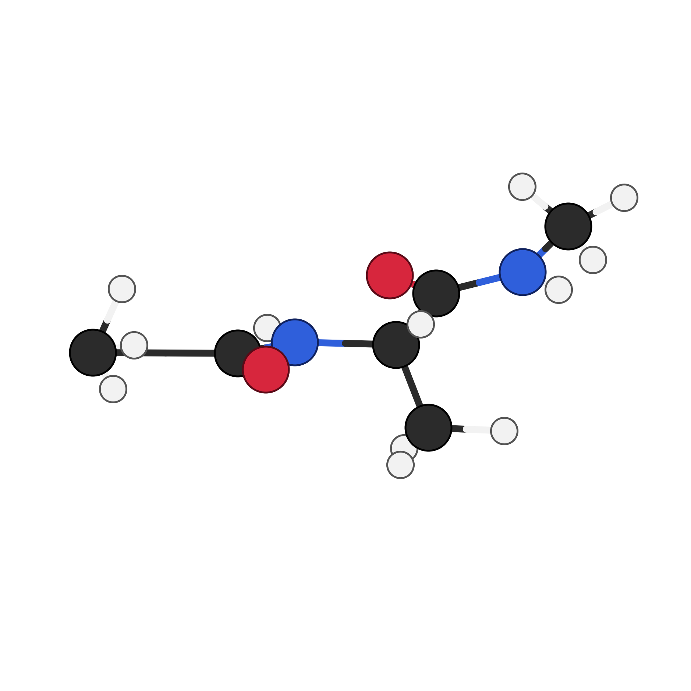
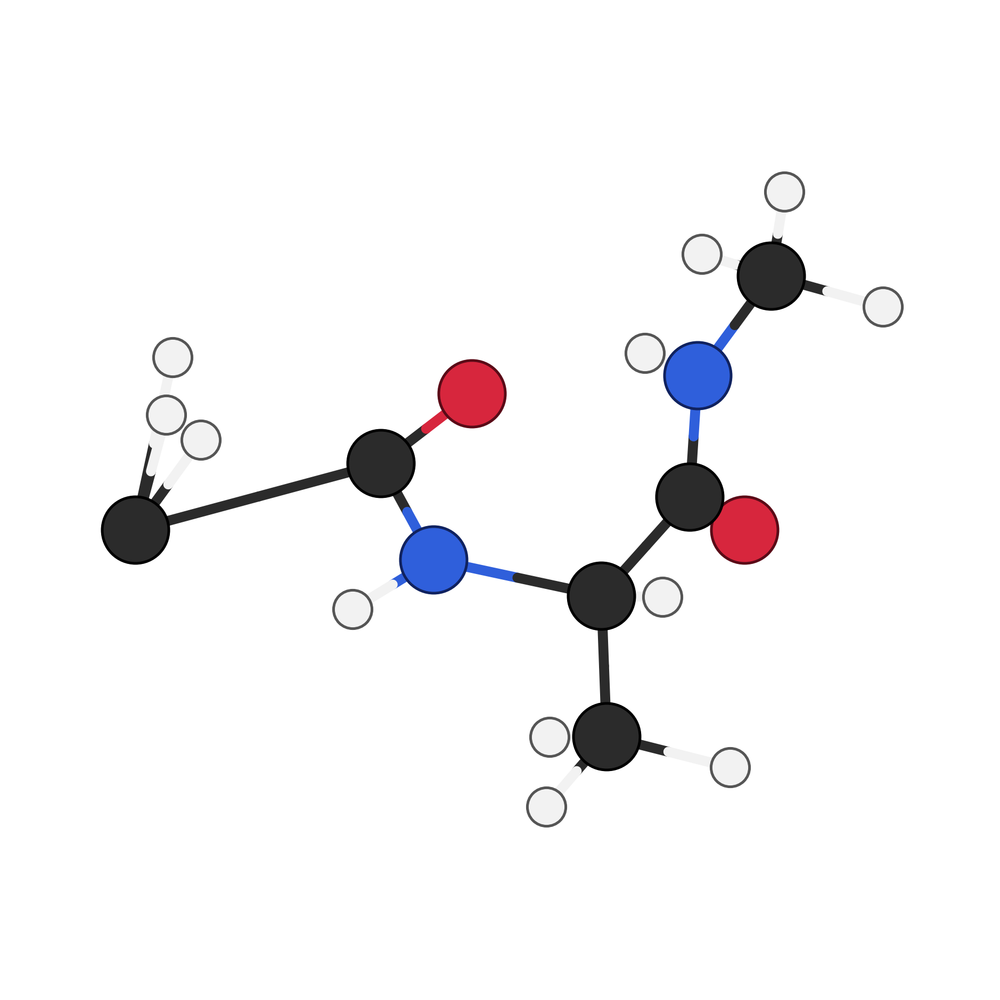
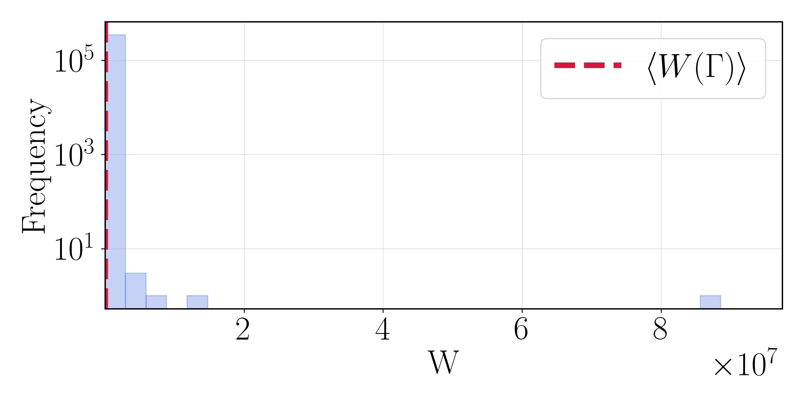
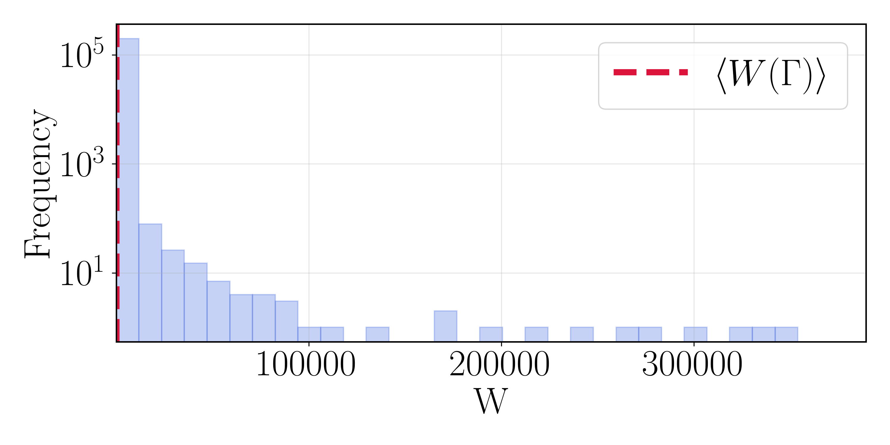
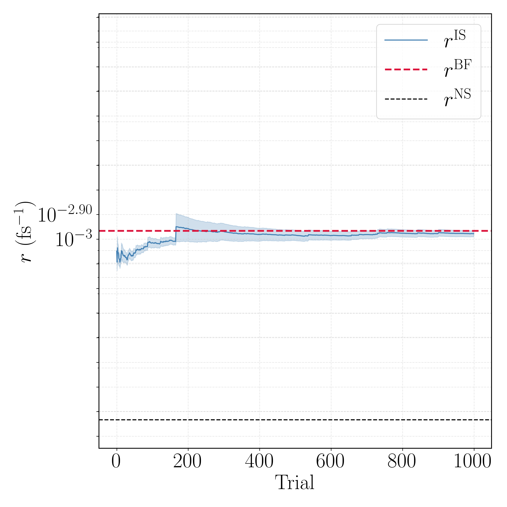
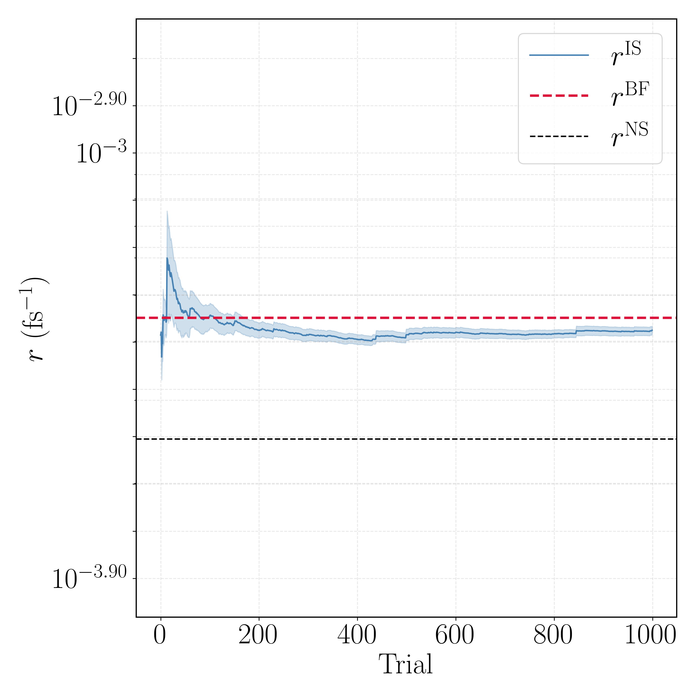
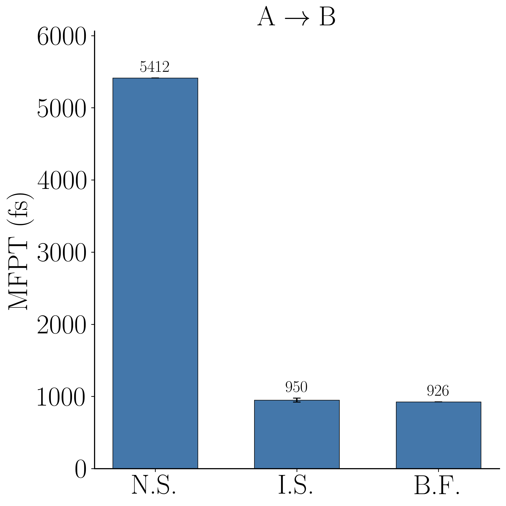
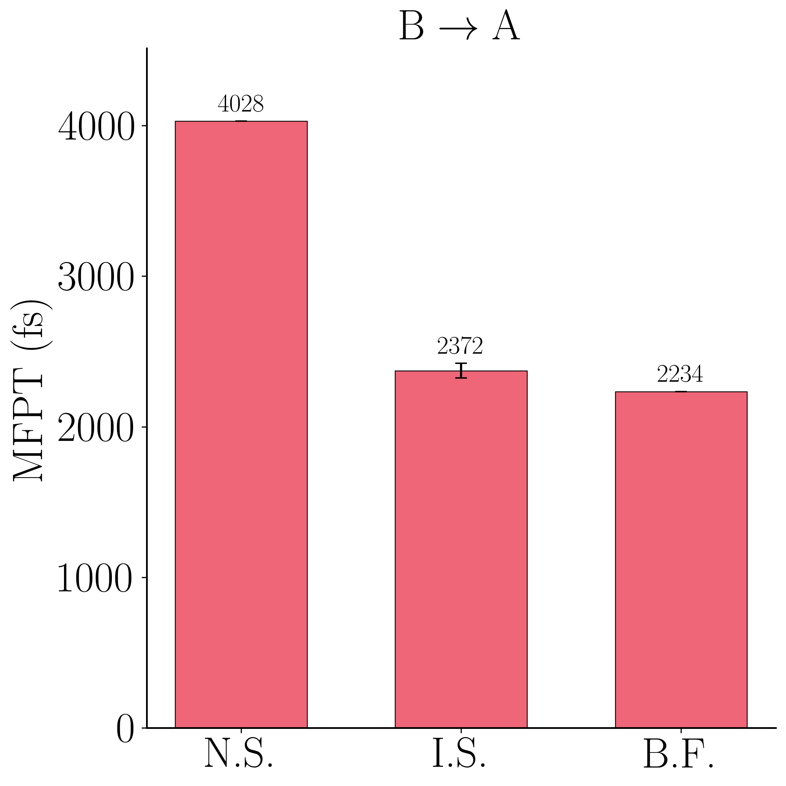

Overview
Estimating protein conformational kinetics from importance-sampled trajectories is limited by weight degeneracy: when biased transition paths are reweighted back to the true dynamics, the variance of the path weights grows exponentially with path length and a handful of paths come to dominate the estimate. The remedy is resampling—but "resample" names a family of methods, not a single method, and which member works is system dependent.
This project asks which weight-control scheme tames that variance for a real peptide, and answers it as an agentic method search. Claude Code proposes an estimator variant, implements it in the sampler, launches a rate calculation, reads back the weight statistics and effective sample size against a brute-force reference, and iterates. On the β/C5 ↔ C7eq isomerization of alanine dipeptide, the loop compared sequential importance sampling (SMC), sequential importance resampling (SIR), and a branching resampled random walk (RRS). RRS is the only scheme that converges in both directions, recovering the brute-force rate to within 3–6% where the naive committor estimate is up to 6× wrong.
- A committor-based, reweighted rate estimator for alanine dipeptide with an exact brute-force reference in both directions.
- A controlled comparison of SMC, SIR, and RRS weight control against that reference.
- A demonstration that an agentic method search can select a variance-reduction scheme that a human would otherwise tune by trial and error.
The Rare Event Problem
The rates of protein conformational changes control biological function, yet they are among the hardest quantities to compute. The transitions that matter—a loop reorganizing, a dihedral flipping, a domain rotating—are rare on the timescale of the fastest molecular motions, so a direct molecular dynamics trajectory spends essentially all of its steps inside a metastable region and almost none crossing between regions. Waiting for enough spontaneous crossings to estimate a rate can require billions of steps, and the cost grows exponentially with the barrier height.
The standard way out is to stop waiting. We decompose a long trajectory into short paths $\Gamma = \{\mathbf{x}_1, \ldots, \mathbf{x}_N\}$, each initiated when the trajectory leaves region A and terminated when it enters region A or B. Paths ending in A are failure paths; those ending in B are success paths. With $\mathcal{K}_\tau(\mathbf{y}\,|\,\mathbf{x})$ the stopped transition kernel at lag $\tau$, the density of a success path factorizes,
and the reactive probability is the integral over all success paths, $P_{\rm AB} = \int p(\Gamma)\, d\Gamma$. The rate then follows from the Hill relation:
where $\Phi_{\rm A}$ is the flux of trajectories escaping region A—the inverse mean time between successive first exits. The flux is cheap, because escapes from a region are not rare. All of the difficulty is concentrated in $P_{\rm AB}$: the probability that an escaped trajectory commits to the far region rather than falling back.
Importance Sampling and the Path Weight
For a genuine rare event the success probability is tiny compared with that of a failure path, so we modify the transition kernel with an importance function $I(\mathbf{x})$ that biases the walker toward B:
where the normalization factor $Z_\tau(\mathbf{x})$—computed on the fly by Monte Carlo integration—keeps $\mathcal{K}'_\tau$ a probability density. Propagating a walker under $\mathcal{K}'_\tau$ and reweighting back to the true dynamics attaches to each path a correction factor built from those same normalizations, and this defines the path weight:
Setting $I(\mathbf{x}) = 0$ on A and $I(\mathbf{x}) = 1$ on B, the optimality condition $\int I(\mathbf{y})\, \mathcal{K}_\tau(\mathbf{y}\,|\,\mathbf{x})\, d\mathbf{y} = I(\mathbf{x})$ is exactly the backward equation whose solution is the committor. When $I$ equals this optimal importance function every $Z_\tau = 1$, and the bias enhances success paths by the known factor $I(\mathbf{x}_N)/I(\mathbf{x}_1)$. When $I$ is imperfect, the weights $W(\Gamma)$ restore the unbiased statistics exactly. The reweighted estimator of the reactive probability is
which is unbiased for any importance function, including an imperfect learned committor. This is the crucial licence the method operates under: errors in the guide degrade efficiency, not correctness. A neural network that is merely a decent approximation of the committor still yields a statistically exact rate—provided we can afford the variance it induces.
The Weight-Variance Problem
Unbiasedness is not enough. Because $W(\Gamma)$ is a product of $N-1$ fluctuating factors, its variance grows exponentially in path length,
the classic weight-degeneracy pathology of sequential importance sampling. The efficiency of the estimator is governed by the effective sample size,
which collapses from $N_p$ toward $1$ as a single weight comes to dominate. Proteins are close to the worst case for this pathology. The fast, stiff vibrational modes—bond stretches, angle bends—make the per-step factors $Z_\tau(\mathbf{x}_i)$ noisy at every step without advancing the slow $(\phi,\psi)$ reorganization we actually care about. Weight noise accumulates on the fast clock while progress accumulates on the slow one. Degeneracy therefore sets in quickly, and a raw importance-sampled estimator is unusable in practice.
Three Weight-Control Schemes
Resampling interrupts the exponential growth by periodically replacing the weighted population with a nearly equally weighted one of the same expectation. We compare three members of that family. All three share the same estimator and the same learned importance function, and differ only in how weights are controlled—so the comparison isolates exactly one design choice.
- SMC — sequential importance sampling, no resampling. Weights accumulate unchecked. This is the baseline, and the scheme most exposed to the exponential variance growth $\mathrm{Var}[W] \sim e^{cN}$.
- SIR — sequential importance resampling. The whole population is resampled by low-variance systematic resampling whenever $\mathrm{ESS} < \theta N_p$ (here $\theta = 0.5$), and every weight is reset to the mean. Global resampling is aggressive: it bounds the weights, but it can over-prune walker diversity.
-
RRS — resampled random walk (branching).
Each walker is treated individually. Whenever its weight leaves a target band
$[w_{\min}, w_{\max}]$, it is branched into an integer number of unit-weight offspring,
$$ n_{\rm off} = \lfloor W \rfloor + \mathbf{1}\!\left[u < W - \lfloor W \rfloor\right], \qquad u \sim \mathcal{U}(0,1), $$so overweight walkers split and underweight walkers undergo Russian-roulette pruning, with survivors reset to unit weight. Branching keeps the weight distribution concentrated near unity while preserving the estimator's expectation.
The Agentic Loop
Exploring this design space by hand is slow: each candidate is a small code change followed by a
long run and a careful reading of variance diagnostics. So rather than tuning the estimator by
hand, we treated the choice of estimator as a search problem and drove it agentically with Claude
Code. Conveniently, the SMC/SIR/RRS logic all lives in a single process_walkers
routine, which means a new variant is a localized diff—exactly the kind of change an agent can make
reliably and then evaluate honestly against ground truth.
Suggest a weight-control variant, informed by why the previous one failed: degeneracy, over-pruning, or non-convergence.
Write it as a branch of the sampler's process_walkers routine—a localized,
reviewable diff.
Launch the biased rate calculation together with the matched brute-force reference.
Read back the rate-versus-trial log, the path-weight histogram, and the ESS, and compare against the exact rate.
The Learned Importance Function
The importance function $I(\mathbf{x})$ is a SchNet-style graph neural network acting on ten chemically distinct heavy atoms selected from the 22-atom topology, with 64 features, three interaction layers, a 20-Gaussian radial basis (cutoff 0.9 nm), and translational/rotational invariance built in. A single scalar head yields a bidirectional committor via $I_+ = \sigma(f)$ and $I_- = \sigma(-f)$, so the same network guides both the forward and reverse transitions. Each interaction layer updates atom features through a continuous-filter convolution,
Training minimizes the log-space residual of the optimality condition, $\ln\!\left[\int I(\mathbf{y}) \mathcal{K}_\tau(\mathbf{y}\,|\,\mathbf{x})\, d\mathbf{y}\right] - \ln I(\mathbf{x})$, over swarm-propagated lags, using a bootstrapped target network updated by exponential moving average ($\tau_{\rm ema} = 5 \times 10^{-3}$), a replay buffer, and gradient clipping. The production importance function is an ensemble average of checkpoints from epochs 1000–1100, which reduces the estimator noise of any single network.
Setup
As a molecular proof of principle we take alanine dipeptide (Ac-Ala-NHMe, 22 atoms) in vacuum, the standard benchmark for conformational sampling and rare-event dynamics. Molecular-mechanics parameters come from the AMBER14 force field and the dynamics are propagated with OpenMM tooling. The system is evolved by constrained overdamped Langevin dynamics, integrated with the Euler–Maruyama scheme,
at $T = 300$ K, damping $\gamma = 1.0$ ps$^{-1}$, and timestep $\Delta t = 0.01$ fs, with hydrogen bond-length constraints imposed by SHAKE-like projection. The conformation is characterized by the backbone dihedrals $(\phi, \psi)$, and the metastable regions are disks of radius $10^\circ$ in Ramachandran space: A $=$ β/C5 centered at $(-150^\circ, 160^\circ)$ and B $=$ C7eq centered at $(-75^\circ, 60^\circ)$. The $\alpha_{\rm R}$ region at $(-70^\circ, -40^\circ)$ acts as an absorbing guard so that indirect crossings are not miscounted. All runs use random seed 2026.
The escape flux $\Phi$ is measured by counting successive first exits from a region during an equilibration run ($10^4$ escapes). The reactive probability $P_{\rm AB}$ is estimated by launching $N_p = 1000$ importance-guided walkers, each carrying a swarm of $n_{\rm swarm} = 100$ micro-steps used to estimate the normalization factor $Z_\tau$, accumulating weights, applying the chosen resampling scheme, and evaluating the estimator; the calculation is repeated for 1000 independent trials. RRS uses the weight band $[1, \infty)$ (Russian-roulette pruning of sub-unit weights) and SIR the threshold $\theta = 0.5$.
For an exact reference we launch $10^4$ unbiased walkers from each region and record first-passage times to the other, giving $r_{\rm AB}^{\rm BF} = 1.08 \times 10^{-3}$ fs$^{-1}$ (MFPT $=$ 926 fs) and $r_{\rm BA}^{\rm BF} = 4.48 \times 10^{-4}$ fs$^{-1}$ (MFPT $=$ 2234 fs). These are the yardstick for every estimator below.
Results
A Benchmark with an Exact Answer
Alanine dipeptide places the two slow states in a two-dimensional dihedral plane whose free-energy surface we can draw explicitly. The β/C5 and C7eq regions sit in separate free-energy wells; because the peptide is small, unbiased MD still yields a converged first-passage rate in both directions. Every biased estimate can therefore be checked against an exact number rather than against itself—which is what makes the system usable as a testbed for a method search at all.



Weight Degeneracy Is Severe
The path-weight distributions make the central difficulty concrete. Although the vast majority of weights sit near the mean $\langle W(\Gamma) \rangle$, the distribution is extraordinarily heavy tailed, with rare paths reaching weights orders of magnitude larger. A single such path can outweigh the other $10^5$ combined—precisely the effective-sample-size collapse anticipated by the theory. Any scheme that does not actively control this tail produces a rate dominated by a few paths.


The Method Search: SMC Degenerates, SIR Is Unstable, RRS Converges
The pattern the agent uncovered is stark. SMC (no resampling) completes the A→B direction but stalls after only 31 of 1000 trials in the reverse direction, where weight degeneracy inflates the population and the compute budget is exhausted before convergence. SIR (global resampling) never settles: its per-trial relative standard deviation is 2–3× the mean, and both directions were terminated early (118 and 533 trials) as the estimate wandered rather than converged—aggressive global resampling destroys walker diversity here. RRS is the only scheme that runs all 1000 trials in both directions and converges cleanly, with per-trial spread comparable to or better than the alternatives and no catastrophic tail behavior.
| Scheme | Direction | Trials | Rate (fs−1) | σ/μ | MFPT (fs) |
|---|---|---|---|---|---|
| SMC (no resampling) | C5 → C7eq | 1000 | 1.02 × 10−3 | 0.70 | 978 |
| SMC (no resampling) | C7eq → C5 | 31 † | 3.91 × 10−4 | 0.38 | 2555 |
| SIR (global resample) | C5 → C7eq | 118 † | 1.22 × 10−3 | 2.18 | 822 |
| SIR (global resample) | C7eq → C5 | 533 † | 5.25 × 10−4 | 3.15 | 1906 |
| RRS (branching) | C5 → C7eq | 1000 | 1.05 × 10−3 | 0.92 | 950 |
| RRS (branching) | C7eq → C5 | 1000 | 4.22 × 10−4 | 0.66 | 2372 |
| Brute force (exact) | C5 → C7eq | — | 1.08 × 10−3 | — | 926 |
| Brute force (exact) | C7eq → C5 | — | 4.48 × 10−4 | — | 2234 |
Table 1. Weight-control schemes versus brute force. Final
estimates over up to 1000 trials ($N_p = 1000$ walkers, ensemble importance function, seed 2026).
"Trials" is the number completed before convergence or termination; σ/μ is the per-trial
relative standard deviation of the rate, a proxy for weight variance. Only RRS (highlighted)
completes both directions and matches the reference.
† Run terminated before 1000 trials (degeneracy / non-convergence).
RRS Recovers the Brute-Force Rate; the Naive Committor Does Not
The running-rate traces for the selected RRS estimator show the reweighted estimate $r^{\rm IS}$ settling onto the brute-force line $r^{\rm BF}$ within a few hundred trials, far above the naive committor estimate $r^{\rm NS}$.
This is the headline validation, and it is worth stating precisely: using the same learned committor two different ways gives very different answers. Applied naively—flux times the mean committor over escape configurations ("N.S.")—the estimate is badly biased: MFPT$_{\rm AB} = 926$ fs against a naive 5412 fs, and MFPT$_{\rm BA} = 2234$ fs against a naive 4028 fs, i.e. up to $\sim 6\times$ too slow, because an imperfect committor does not satisfy the exact flux relation. Using that same committor as an importance-sampling guide and reweighting with RRS ("I.S.") corrects this to 950 fs ($+2.6\%$) and 2372 fs ($+6.2\%$), both within error of the brute-force bars ("B.F."). The reweighting turns an imperfect learned object into a quantitatively correct rate—the property promised by the unbiased estimator—provided the weight variance is controlled, which is exactly what RRS delivers.




Takeaway
Future Directions
Several limitations frame the outlook. The benchmark is a single peptide in vacuum, and the exponential weight growth is milder here than it will be for a larger, solvated system—so the real test of RRS is whether it scales. The B→A direction also retains a slightly larger residual bias and per-trial variance than A→B, which points to the weight band $[w_{\min}, w_{\max}]$ and the ESS trigger as hyperparameters worth autotuning; these are themselves natural targets for the agent to optimize.
More broadly, the agentic loop is not specific to resampling. An agent that can propose an estimator, implement it, run it, and read back a variance diagnostic against a trusted reference is a general engine for numerical-scheme discovery in molecular simulation. Turning Claude loose on the functional form of the bias, not just the resampling, is the direction I find most promising.
Acknowledgements
This work was carried out during the Built with Claude: Life Sciences hackathon, in partnership with Gladstone Institutes. I thank the organizers and the Anthropic team, and gratefully acknowledge the Anthropic API credits provided for the event. The committor and rate-estimation framework builds on prior work on importance sampling for rare transition paths (accelerated Langevin dynamics and accelerated MCMC, Kim & Cai 2026). Every result uses random seed 2026 and is reproducible from the accompanying pipeline: equilibration, brute-force MD, committor training, branching-random-walk rate estimation, and plotting.